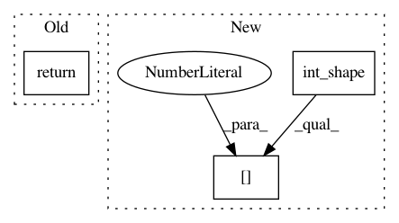

65a215646c653ab808170c8b8c10de2945262613,keras/backend/theano_backend.py,,in_top_k,#Any#Any#Any#,1496
Before Change
predictions_top_k = T.argsort(predictions)[:, -k:]
result, _ = theano.map(lambda prediction, target: any(equal(prediction, target)), sequences=[predictions_top_k, targets])
return result
// CONVOLUTIONS
After Change
except TypeError:
return T.zeros_like(targets, dtype="int8")
if k >= int_shape(predictions)[1]:
try:
return T.ones_like(targets, dtype="bool")
except TypeError:
In pattern: SUPERPATTERN
Frequency: 3
Non-data size: 3
Instances
Project Name: keras-team/keras
Commit Name: 65a215646c653ab808170c8b8c10de2945262613
Time: 2017-04-07
Author: myutwo150@users.noreply.github.com
File Name: keras/backend/theano_backend.py
Class Name:
Method Name: in_top_k
Project Name: keras-team/keras
Commit Name: 1b11b4eeb6bd4b163ce351af680c5a14d823443d
Time: 2016-05-11
Author: francois.chollet@gmail.com
File Name: keras/backend/tensorflow_backend.py
Class Name:
Method Name: resize_images
Project Name: keras-team/keras
Commit Name: 75bef59016a8a230823a04836e1ab6e5bf0079dc
Time: 2016-04-01
Author: francois.chollet@gmail.com
File Name: keras/backend/tensorflow_backend.py
Class Name:
Method Name: dot